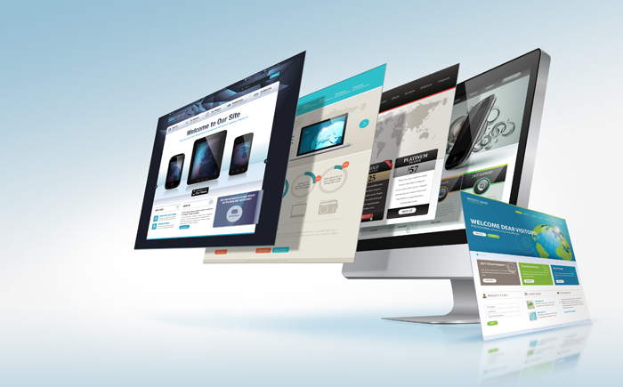

El diseño web es un área enfocada en el desarrollo de interfaces digitales, como el diseño de sitios y aplicaciones para web. Para ello, los diseñadores web crean las páginas utilizando lenguajes de marcado como HTML.El diseño web ha visto amplia aplicación en los sectores comerciales de Internet especialmente en la World Wide Web. A menudo la web se utiliza como medio de expresión plástica en sí. Artistas y creadores hacen de las páginas en Internet un medio más para ofrecer sus producciones y utilizarlas como un canal más de difusión de su obra.

Cuando hablamos de un buen diseño web, algunos puntos son fundamentales y no pueden faltar en tu sitio. Aquí están los aspectos más destacados:
¿Conoces esos correos electrónicos que tienen un «bloque de texto» porque todo el mensaje está escrito en un solo párrafo? Leerlos es demasiado agotador, ¿no es así? Bueno, lo mismo ocurre con los visitantes de tu sitio si el no considerar la escaneabilidad textual.
Si desde este punto comenzamos a escribir esta publicación con un tipo de letra completamente diferente, tu experiencia de lectura no sería muy agradable, ¿verdad? Después de todo, es una tipografía que no encajaría con el resto del contenido. Lo mismo debería aplicarse a tu sitio.
En un mundo donde todos parecen estar siempre apurados, tener un sitio web de carga rápida es esencial. Según Google, los sitios que tardan más de 2 segundos en cargarse dañan tanto la experiencia del usuario como la indexación del sitio.
Si bien es común pensar que un diseñador web es responsable de crear sitios web atractivos y completamente funcionales, hacen más que eso.
Los diseñadores web tienen en su trabajo tareas rutinarias relacionadas con la creación de un diseño para medios digitales y la creación de contenido.
Por lo tanto, deben analizar tanto las necesidades del cliente como los objetivos para configurar un sitio web a fin de brindar a los visitantes la mejor experiencia.
Además, diseñadores web deben saber cómo insertar gráficos, usar lenguajes como HTML y actualizar el sitio cuando sea necesario.
Ahora que has permanecido con nosotros hasta el final del texto, ya sabes qué perfil debe tener un buen profesional de diseño web.
Se utiliza principalmente del lado del cliente aunque se puede utilizar del lado del servidor. Actualmente y gracias a tecnologías como AJAX es utilizado para enviar y recibir información del servidor.
Como principales ventajas, tenemos que destacar que es un lenguaje de scripting seguro y fiable, cuyos scripts tienen capacidades limitadas, debido a la seguridad.
Como desventajas, podríamos mencionar que el código debe descargarse por completo y es visible por cualquier usuario.
Es un lenguaje enfocado en la creación de webs dinámicas. Sus scripts son interpretados por el servidor y genera código HTML. Requiere Apache o IIS con librerías de PHP. Hereda su sintaxis de C, Java y Perl.
Como principales ventajas, hemos de decir que es un lenguaje fácil de aprender y muy rápido. Soporta la orientación a objetos y utiliza un lenguaje multiplataforma. Además, puede conectarse con una gran cantidad de base de datos: MySQL, PostgreSQL, Oracle, MS SQL Server… No necesita que se definan los tipos de variables. Uno de sus aspectos más llamativos es que está diseñado con el fin de ser un lenguaje muy seguro para escribir CGI, más que Perl o C.
Considerado por muchos el lenguaje más limpio a la hora de programar. El código, al igual que JavaScript, es interpretado y no compilado. Algo curioso en este lenguaje es que permite a los programadores elegir un estilo de programación concreto (objetos, estructurado, funcional…), debido a que es un lenguaje de programación multiplataforma.
Como ventajas de Python, destacamos que es libre y de fuente abierta, de propósito general. Cuenta con muchas funciones y librerías y es multiplataforma y fácil de programar. Por otro lado, su principal desventaja es que, al ser un lenguaje interpretado, es bastante lento.
Como el anterior, es un lenguaje interpretado y está orientado a objetos. Hereda su sintaxis de Phyton y Perl. El lenguaje puede cargar librerías de extensiones dinámicamente si el sistema operativo lo permite. Además, es un lenguaje portátil.